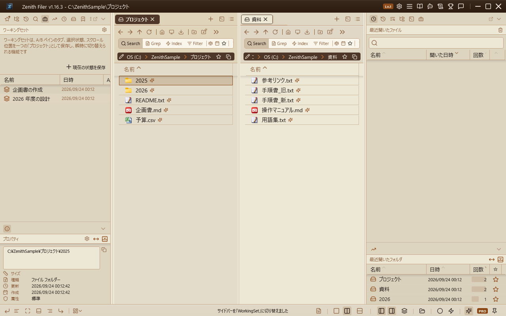
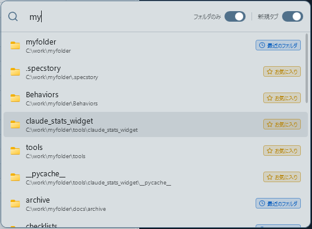

ワーキングセット¶

A/B ペイン全体の状態（タブのパス・ロック・表示モード・ソート、選択項目、スクロール位置）を「ワーキングセット」として保存し、一つの「プロジェクト」として瞬時に切り替えられる強力な機能です。
ナビペインのブリーフケースアイコン（標準: Ctrl+Shift+5）で表示します。ビューの上部には、機能の目的を端的に示すガイドテキストが表示されます。
保存¶
ナビペイン上部の「現在の状態を保存」ボタンをクリックし、名前を入力すると現在の A/B ペインの全状態が保存されます。
データは settings.json に永続化され、アプリを終了・再起動しても一覧はすべて保持されます。
プレビューと確定（ロールバック機能）¶
一覧から保存済みのセットをクリックすると、即座に A/B ペインの内容がそのセットの状態に切り替わります。
この機能の最大の特徴は、「確定させるまで元の状態を汚さない」点にあります。
- プレビュー状態: セットをクリックすると一時的な「プレビュー」状態となり、画面下部にブランドカラーであるチャコールブラック（
#545B64）の専用フッターバーが表示されます。 - 適用: フッターの「✔ このセットを適用する」ボタンを押すと、その状態を現在の作業状態として確定します。
-
キャンセル（ロールバック）: フッターの「✗ 元の状態に戻す」ボタンを押すか、ナビペインで他のビュー（お気に入り等）に切り替えると、ワーキングセットを読み込む直前の状態（すべてのタブ、選択位置、スクロール状況）に自動的に復元されます。
これにより、「プロジェクト A の作業中に、プロジェクト B の資料をちょっと確認してすぐに戻る」といったコンテキストスイッチが極めてスムーズに行えます。
管理¶
- 上書き保存: 各行の右端にある保存ボタンを押すと、そのセットをいまの A/B ペインの状態で上書きします。右クリックメニューの「上書き保存」と同じ動作です。
- 名前の変更: セットを右クリックして「名前の変更」を選択すると、セット名を編集できます。
- 削除: セットを右クリックして「削除」を選択、または項目を選択して削除ボタン（ゴミ箱アイコン）を押すと、そのセットを削除します。削除の前には確認が入ります（組み直すには保存し直しが必要なためです）。
並べ替え¶
列の見出し（名前 / 日時 / A/B）をクリックすると、その列で並べ替えます。押すたびに 並べ替え → 逆順 → 解除 と切り替わり、解除するとドラッグで自分が並べた順に戻ります。最初の向きは列によって変わり、名前は昇順から、日時と A/B は「大きいものが先」の降順から始まります。いま並べ替えに使っている列には、見出しの矢印で向きが示されます。
- 並べ替えは見た目だけを変えるもので、保存される順序は変わりません。ステータスバーのクイックアクセスに並ぶ順も、自分で並べた順のままです。
- 並べ替えている間は、ドラッグでの並べ替えができません。見た目が動かないまま保存順だけが書き換わるのを防ぐためです。並べ替えを解除すれば、また自由に入れ替えられます。
- 並べ替えを掛けたまま上書きすると、日時は新しくなりますが行はその場に留まります。もう一度見出しを押すと並べ直されます。
- 並べ替えの状態はそのとき限りで、次回の起動時には解除された状態に戻ります。
キーボードだけで操作する¶
Ctrl+Shift+5 でワーキングセットを開くと、そのまま一覧にフォーカスが入ります。マウスに持ち替えずに、選んで、確かめて、作業へ戻るところまで一周できます。
| キー | 動作 |
|---|---|
↑ ↓ |
セットを選ぶ |
Enter |
選んだセットを開く（下見）。もう一度押すと確定する |
Esc |
下見中なら元の状態に戻す。下見していなければファイル一覧へフォーカスを返す |
Ctrl+S |
選んだセットを、いまの状態で上書きする |
F2 |
名前を変える |
Delete |
削除する（確認あり） |
Insert |
いまの状態を新しいセットとして保存する |
「クリックで即時適用」（歯車ボタンの設定）がオンのときは、Enter 一回で確定まで進みます。確定するとファイル一覧へフォーカスが戻るので、Ctrl+Shift+5 → ↓ → Enter だけで切り替えから作業再開までが終わります。
下見中の行には目印が付くので、「もう一度 Enter を押せば確定できる」ことがひと目で分かります。
ステータスバーのクイックアクセス（Ctrl+Shift+S）では、並んだセットに 1〜9 の番号が振られます。その数字キーを押すと、矢印で降りていかずにそのセットをすぐ適用できます。
クイックジャンプ¶

Ctrl+P でクイックジャンプダイアログを開きます。過去の自分の軌跡全体——お気に入り・よく使うフォルダ・参照履歴（全件）・実際に開いたタブ（滞在時間順）・最近開いたファイル——に加え、インデックス済みの全ファイル/フォルダ（入力に応じた動的検索）を横断的にインクリメンタル検索できます。フォルダを選ぶとそのフォルダへ移動し、ファイルを選ぶと OS の既定アプリで開きます。
- 検索: テキストを入力すると、名前・パス・説明を対象にリアルタイムで候補が絞り込まれます。完全一致 > 前方一致 > 単語境界一致 > 部分一致の順に高くスコアリングされ、空白区切りで複数語を入力するとすべての語を含む候補に絞り込まれます（AND 検索）。カスタム表示名を付けたお気に入りも実フォルダ名でヒットします。マッチしたお気に入りは件数上限に関わらず必ず結果に含まれます。
- ソースバッジ: 各候補の右側に「お気に入り」「よく使う」「最近」「よく開くタブ」「最近のファイル」「インデックス」などのソースが、ソース別のカラーとアイコン（お気に入り＝アンバー★、よく使う＝グリーン、履歴＝ブルー、よく開くタブ＝パープル、最近のファイル＝スレート、インデックス＝ティール）付きで表示され、一目で出所を判別できます。お気に入り・よく使うは開いた瞬間に、履歴・タブ・最近のファイルは直後に非同期で追加され、インデックスは2文字以上の入力で動的に検索されます（いずれも起動・操作をブロックしません）。
- フォルダのみ／ファイルも含む切替: スライド式トグルで、検索対象をフォルダのみに絞るか、ファイル（最近のファイル・インデックス内のファイル）も含めるかを切り替えられます。デフォルトはフォルダのみで、状態は記憶され次回以降も引き継がれます。
- キーボード操作: ↑↓ で候補を移動、Enter で決定、Escape で閉じます。
- 新規タブ／上書き切替: スライド式トグルで、選択したフォルダを新規タブで開くか現在のタブを上書きするかを切り替えられます。デフォルトは新規タブです。
- 枠外クリック: ダイアログ外をクリックすると自動的に閉じます。
- ダイアログはマウスカーソル付近に表示されます。